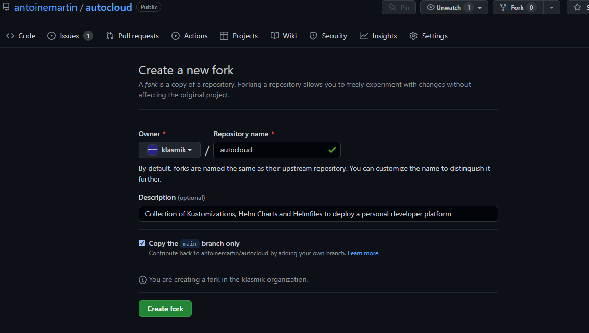
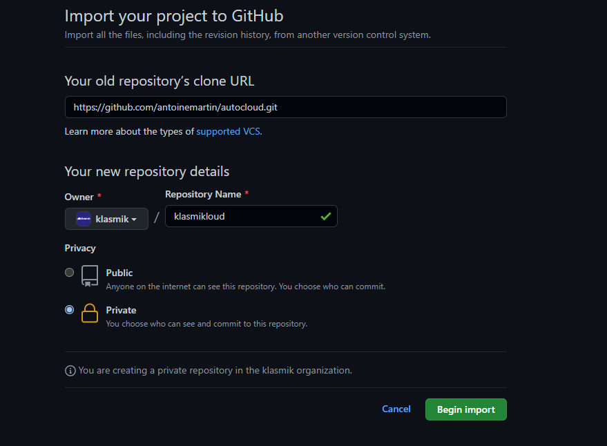

Setup the GitOps environment¶
Todo
Provide a Terraform script for this.
Setting up you GitOps environment involves the following tasks:
- Fork (public) or Import (private) the Autocloud repository on your personal account or organization.
- Create a deployment branch that will be tracked by Argo CD.
There are other tasks, potentially optional, related to te repository, but as they involve credentials, they are covered after changing the encryption keys in the environment adaptation:
- Create a deployment key on the repository if the repository is going to be private.
- Create an OAuth Application on your account or organization to allow github based authentication on Argo CD. This is optional.
- Creating a webhook on the repository targeting Argo CD for faster updates.
Info
In the following, we are going to assume that the destination is an
organization named klasmik and that the repository,
named klasmikloud is being kept private.
Fork the repository¶
On github.com¶
If you plan to keep your repository public, fork the public Autocloud repository into your own account or organization:

In the case you want to make the repo private, it's better to import it instead. Click on the icon in the top right corner and choose Import repository:

From the command line¶
This also can be done from the command line:
Clone the repository and create a deployment branch¶
Following the
GitOps principles,
each deployment lives in its own branch. Clone the repository and create a
deployment branch for your development environment (replace
klasmik/klasmikloud with your organization and project name):
Once on the proper branch, you can now continue and change the encryption key.